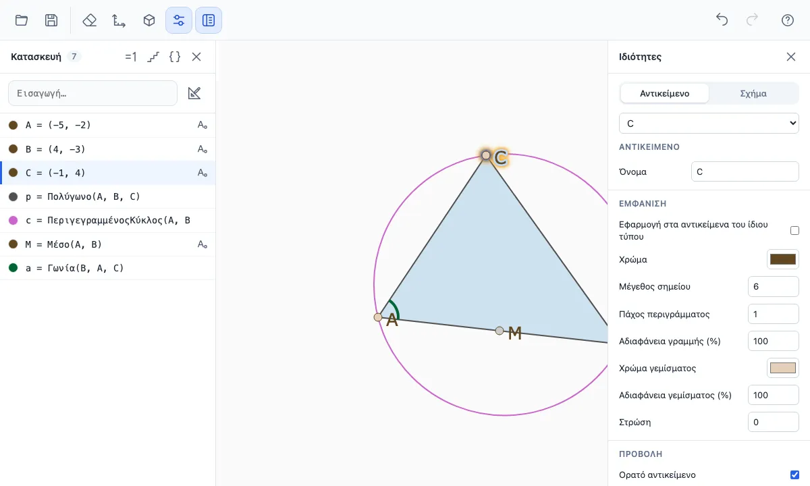
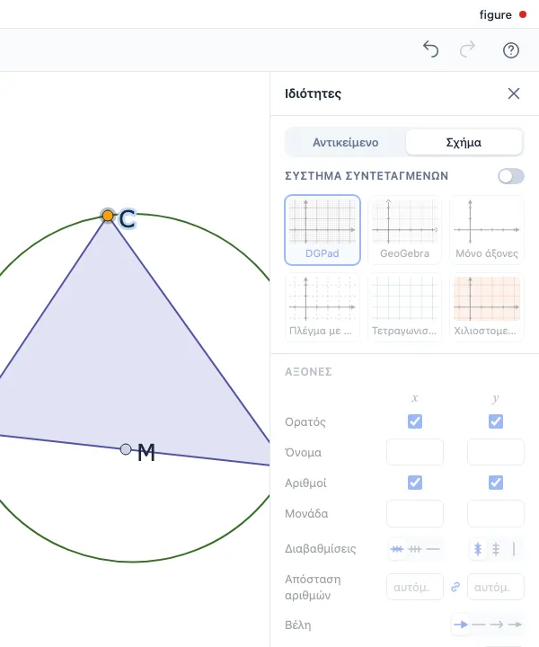

Ιδιότητες και σύστημα συντεταγμένων

Το πλαίσιο
- Ανοίγει με το ή με το της ζώνης περιβάλλοντος· κλείνει με το ✕ του, το ίδιο κουμπί ή το Esc.
- Ένα δεξί κλικ το ανοίγει ανά πάσα στιγμή σε ό,τι στοχεύει: ένα αντικείμενο, το όνομά του ή τη γραμμή του, ολόκληρη την επιλογή αν το αντικείμενο ανήκει σε αυτήν, και την καρτέλα Σχήμα σε κενό σημείο ή πάνω σε άξονα. Το ενεργό εργαλείο διατηρεί τα ορίσματά του, και το κλείσιμο του πλαισίου, για παράδειγμα με Esc, επαναφέρει την παλέτα αν το πλαίσιο είχε πάρει τη θέση της, με το εργαλείο ακόμη ενεργό. Μοναδική εξαίρεση: κατά τον ορισμό μιας μακροεντολής, το δεξί κλικ δεν κάνει τίποτα.
- Καταλαμβάνει τη θέση της παλέτας εργαλείων: το άνοιγμα του πλαισίου κλείνει την παλέτα και αντίστροφα.
- Δύο καρτέλες: Αντικείμενο και Σχήμα.
- Το αντικείμενο προς ρύθμιση επιλέγεται στο σχήμα, από τη γραμμή του ή από τη λίστα «Επιλογή αντικειμένου…» (συμπεριλαμβάνονται τα κρυφά). Ένα κλικ στο σχήμα επιλέγει αντί να κατασκευάζει· κουμπιά και πλαίσια ελέγχου επιλέγονται χωρίς να ενεργοποιούνται. Ένα εργαλείο της παλέτας ή η γραμμή εισαγωγής κατασκευάζουν κανονικά, και το νέο αντικείμενο εμφανίζεται στο πλαίσιο. Μια επιλεγμένη πλευρά ή κορυφή πολυγώνου δείχνει τις ρυθμίσεις του πολυγώνου.
- Οι αλλαγές είναι άμεσες και αναιρούνται.
- Αριθμητικά πεδία: το οριζόντιο σύρσιμο ρυθμίζει την τιμή (Shift: δέκα φορές πιο λεπτά), ένα κλικ επιτρέπει την πληκτρολόγησή της. Ένα σύρσιμο μετρά ως ένα μόνο βήμα αναίρεσης.
- Ένα κουμπί ↺ δίπλα σε ένα χρώμα το επαναφέρει στο προεπιλεγμένο χρώμα του εργαλείου.
Η καρτέλα «Αντικείμενο»
| Ενότητα | Ρυθμίσεις |
|---|---|
| Αντικείμενο | όνομα· για εντολή ή έκφραση, ο ορισμός |
| Προγράμματα | ενός σημείου ή μιας παράστασης: η χελώνα του και τα προγράμματα συμβάντων του, σε μπλοκ |
| Εμφάνιση | εφαρμογή στα αντικείμενα του ίδιου τύπου, χρώμα, μέγεθος σημείου, πάχος, περίγραμμα, αδιαφάνεια γραμμής και γεμίσματος, χρώμα γεμίσματος, διακεκομμένη, στρώση (σειρά σχεδίασης) |
| Προβολή | ορατό αντικείμενο, εμφάνιση ονόματος, σταθερό αντικείμενο (πολύγωνο), αδρανές αντικείμενο, μέγεθος κειμένου, δεκαδικά ψηφία της τιμής (ή χωρίς εμφάνιση), ορατό αν, πλάτος πεδίου εισαγωγής |
| Σημείο | σχήμα (κύκλος, τετράγωνο, σταυρός, ρόμβος), θέση ονόματος σε μοίρες, ίχνος, οριζόντιο και κατακόρυφο βήμα (μετακίνηση με άλματα) |
| Τμήμα | σήμανση (γραμμούλες ίσων μηκών) |
| Γωνία | ακτίνα τόξου, σήμανση ορθής γωνίας (ανοιχτός γνώμονας, τόξο, τετράγωνο, τελεία, γνώμονας) |
| Γεωμετρικός τόπος, λίστα | αριθμός σημείων· πάχος τμημάτων |
| Δρομέας | βήμα, μήκος, κατακόρυφος, χρώμα και μέγεθος λαβής |
| Πλαίσιο | εικόνας: χρώμα, πάχος (0: χωρίς πλαίσιο), αδιαφάνεια γραμμής, διακεκομμένη· η αδιαφάνεια και το επίπεδό της μένουν στην Εμφάνιση |
| Κίνηση | ταχύτητα (0: διακοπή), αντίστροφη φορά, στο άκρο: επανάληψη, μπρος-πίσω ή διακοπή |
Ορατό αν
Στην ενότητα Εμφάνιση: το όνομα μιας έκφρασης, ένας τύπος (m == 2) ή τίποτα. Το αντικείμενο φαίνεται μόνο όσο είναι αληθής, και
δεν μπορεί να εξαρτάται από το ίδιο το αντικείμενο.
Η γραμμή ενός πλαισίου ονομάζει τα αντικείμενα των οποίων είναι συνθήκη: η προσθήκη ονόματος συνδέει το αντικείμενο με το πλαίσιο, η αφαίρεση το κάνει πάντα ορατό. Η διαγραφή του πλαισίου κρατά αυτά τα αντικείμενα, πάντα ορατά.
Χρώματα κατά τη δημιουργία
Ένα νέο αντικείμενο παίρνει το χρώμα του τύπου του: ελεύθερα σημεία και σημεία πάνω σε αντικείμενο πορτοκαλί, κατασκευασμένα σημεία γκρι, τμήματα κόκκινα, ευθείες μπλε, κύκλοι πράσινοι, πολύγωνα γεμάτα με λουλακί… Ένα νέο σχήμα έχει λευκό φόντο.
Πολλά αντικείμενα
Σε πολλαπλή επιλογή, εμφανίζονται μόνο οι ρυθμίσεις που είναι κοινές σε όλα· μια τιμή που διαφέρει από αντικείμενο σε αντικείμενο εμφανίζεται με γκρίζα πλάγια γράμματα. Το Ctrl-κλικ, το Shift-κλικ ή το παρατεταμένο πάτημα (σχήμα ή πλαίσιο «Κατασκευή») προσθέτουν ή αφαιρούν ένα αντικείμενο.
Αδρανή αντικείμενα
Αδρανές αντικείμενο: το αντικείμενο δεν αντιδρά πια ούτε στο πέρασμα του δείκτη ούτε στο κλικ ούτε στο άγγιγμα. Δεν σύρεται και δεν επιλέγεται πια στο σχήμα: ο δείκτης φτάνει σε ό,τι βρίσκεται από κάτω. Όσο το πλαίσιο ιδιοτήτων είναι ανοιχτό, κανένα αντικείμενο δεν είναι αδρανές, ώστε να μπορείτε να το επιλέξετε και να αποεπιλέξετε το πλαίσιο.
Η καρτέλα «Σχήμα»

Ένα κλικ σε έναν άξονα ανοίγει αυτή την καρτέλα.
| Ενότητα | Ρυθμίσεις |
|---|---|
| Σύστημα συντεταγμένων | ορατό ή όχι· πρότυπα DGPad, GeoGebra, μόνο άξονες, πλέγμα με τελείες, τετραγωνισμένο χαρτί, χιλιοστομετρικό χαρτί (μόνο εμφάνιση, ούτε ζουμ ούτε φόντο) |
| Άξονες (x και y) | ορατός, όνομα, αριθμοί, μονάδα (π: πολλαπλάσια του π/2), διαβαθμίσεις, απόσταση αριθμών (κενό: auto· το 🔗 συνδέει x και y), βέλη, χρώμα, μέγεθος και έντονη γραφή των αριθμών, στυλ DGPad ή GeoGebra, θετικοί ημιάξονες |
| Πλέγμα | ορατό ή όχι, απόσταση γραμμών, υποδιαιρέσεις, χρώμα (των αξόνων από προεπιλογή), πάχος, γραμμή συνεχής, με τελείες ή διακεκομμένη |
| Ζουμ και μετακίνηση | άξονας σταθερός στην οθόνη, ζουμ γύρω από την αρχή |
| Σχήμα | φόντο· γωνίες σε μοίρες (προεπιλογή) ή ακτίνια· τμήματα πάνω από τα πολύγωνα |
Σε 3D
| Ενότητα | Ρυθμίσεις |
|---|---|
| Άξονες | ορατό τρίεδρο, χρώμα, πάχος |
| Δάπεδο | ορατό, χρώμα (↺: μπλε από πάνω, καφέ από κάτω), αδιαφάνεια, μέγεθος, απόσταση, χρώμα και πάχος γραμμών |
| Προβολή | προοπτική |
Αυτές οι ρυθμίσεις αναιρούνται· το ζουμ, η μετακίνηση και η περιστροφή της προβολής όχι.